Siby user guide
Version 1 (November 2026). Siby is a chess database and analysis program. It works with two companions:
- Toby, a human-like engine: it predicts the moves a player of a given rating would play, and plays like one;
- Gaby, a large archive of games (about 11 million), used as the reference database.
This guide follows the order in which most people discover Siby: installing it, finding their way around the main window, then each task in turn (analysing, reviewing a game, preparing against someone, playing, following live games).
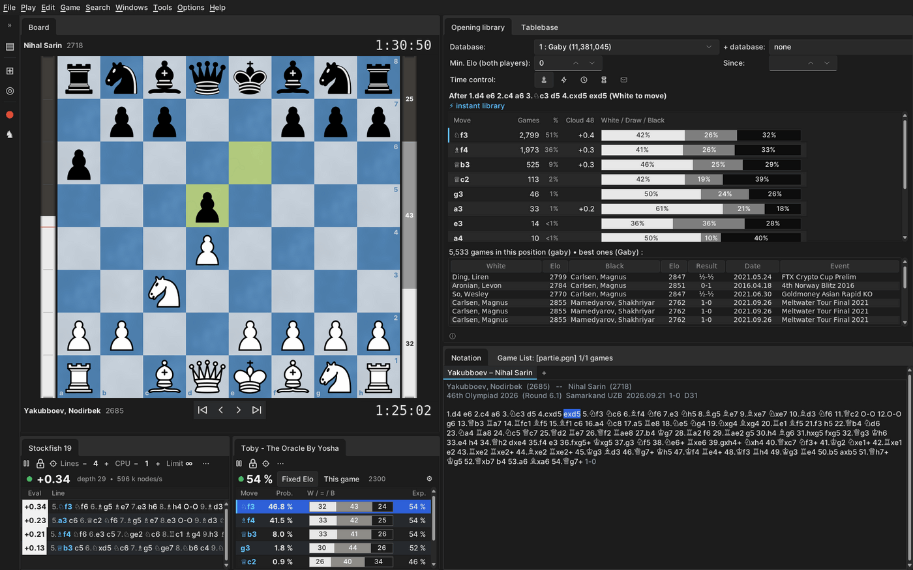
Contents
- Installing Siby
- The main window
- Databases
- Board and notation
- Engines
- Game review
- Opening library
- Preparing against a player
- Searching
- Playing against Toby or an Alter Ego
- Live broadcasts
- Training
- Endgame tablebases
- Options
- Keyboard shortcuts
- Where Siby keeps your files
1. Installing Siby
Windows
- Download
Siby-windows-x64.zipand unzip it anywhere (for example inC:\Sibyor on a USB key: Siby is portable). - Run
Siby.exein theSibyfolder. - On the first launch, Windows may show Windows protected your PC (Siby is not signed yet): click More info, then Run anyway.
Linux
- Download
Siby-linux-x64.tar.gzand extract it. - Run
./sibyin the extracted folder.
First steps
- Gaby: on the first launch, Tools › Gaby › Download Gaby fetches the archive (about 2 GB). It is then updated every day in the background. Gaby is the reference database: the opening library, the preparation and Alter Ego use it. A copy of Gaby that is not the published version (put there by hand, for example) gets no daily update until you choose: Download Gaby again, or Keep my copy (the daily updates then apply to it).
- Engines: Tools › Engines… downloads Stockfish (and Leela on Windows) in one click, and adds Toby or any other engine from a file (see Engines).
- Your profile: Options › My profile… takes your name as it is written in your games, and your Lichess and Chess.com accounts. Siby then knows which games are yours.
- Language: Options › Language switches between English and French.
2. The main window
The left bar
The narrow bar on the left switches between Siby's main views:
| Icon | View |
|---|---|
| » | Unfolds the bar to show the names |
| ▤ | My databases: every database as a tile |
| ⊞ | Lab: board and engines, with two big tabs on the right: Prepare against a player and Analysis |
| ● | Live broadcasts (Lichess) |
| ♞ | Play: a click opens the Play window; a right click gives a menu |
Panels
Each part of the window (notation, engines, library, review…) is a panel. Panels can be moved by dragging their tab, placed side by side or in tabs, and closed with a right click on the tab. Windows › Lab brings back the Lab, and Windows › My layouts saves your own.
The Lab
The Lab is where you work on the board. On the right, two big tabs:
- Prepare against a player (see section 8);
- Analysis: the opening library and tablebases above; the notation, the game list and My databases below.
Both pages stay ready: switching is instant, and each keeps its state (your preparation is still there when you come back from the analysis).
Menus
| Menu | What you find there |
|---|---|
| File | My databases, open, new database, close, padlock, recent files |
| Play | Play against Toby or an Alter Ego; play the board position; training |
| Edit | Undo and redo, copy and paste games and positions, board editor, variations |
| Game | New game, save, game information, game review, go to another game |
| Search | Games (player, event, years), partial position and material, moves, filter |
| Windows | Layouts, game list, notation, opening library, tablebases, live broadcasts |
| Tools | Engines, preparation, opponents' online games, Gaby, database maintenance, import and export |
| Options | Profile, appearance, sounds, evaluation bars, language |
| Help | Help, thanks, about |
3. Databases
My databases
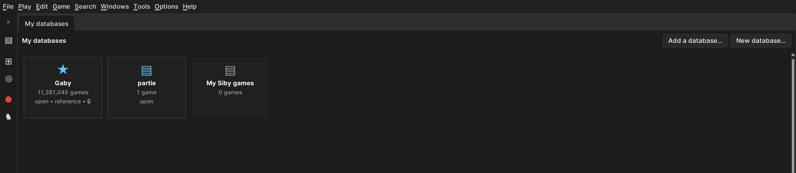
My databases shows each database as a tile, with its number of games.
A double click opens it. Add a database… adds an existing file
(.si4 or .pgn); New database… creates one.
- Gaby (the star) is the reference database.
- My Siby games keeps your games against Toby and the Alter Egos.
- Siby live keeps the live games you save.
A right click on a tile offers: open, close, search, make it the reference database, padlock, convert (to a Siby database or to PGN), clean (comments into variations), remove the tile, delete the database.
Padlock: a padlocked database cannot be changed by mistake. Gaby and the reference database are padlocked by default.
PGN files open directly and can be edited and saved in place.
The game list
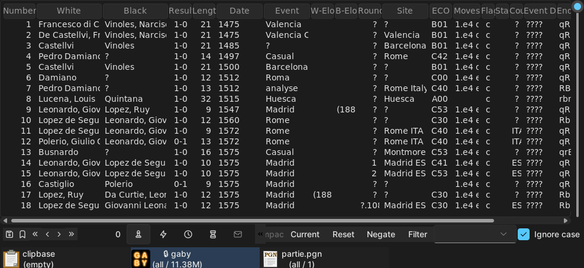
The game list (Windows › Game list, Ctrl+L) shows the games of the current database, or of the current search.
- A click on a column header sorts the list; a right click adds or hides columns.
- A double click opens the game in a new notation tab.
- Hovering over a game opens it on two lines across the list: its row, and under it its next moves. Moving the pointer along the moves shows each position on the board; Ctrl+wheel goes through them move by move, the wheel still scrolls the list. A click on a move opens the game there. The same works in the libraries' lists and in Prepare against a player.
- A right click on a game: open, copy (PGN), copy to another database, mark as deleted, flags, move up or down, hide from the list.
- Games can be dragged to reorder them, or onto another database tile to copy them.
- The slider on the right scrolls through millions of games; a click anywhere on it jumps there.
- Board position shows only the games that reach the position on the board, and follows the board as you play or move through a game. A game opened from the list starts at that position.
- The time control buttons and the search box (Filter, or Enter) narrow the list; Remove filter shows everything again. Board position searches within the games shown (a search, a text, a time control).
- Search… (Ctrl+Shift+F) opens the Search window: one window, in tabs (Games, Position, Moves, Material and patterns), the database at the top, the games found previewed on the right, and "Only within the games shown" at the bottom for every tab.
Next to the notation and the game list, the My databases tab lists your databases by name; a click on a column header sorts by games, status or folder. A double click opens a database, a right click gives the same menu as the tiles.
4. Board and notation
Moving pieces
The board works as on Lichess: drag a piece or click it then click the target square. Dots show the possible moves, and the last move is tinted.
- Right click on a square marks it; right drag draws an arrow: green, red with Shift or Ctrl, blue with Alt, yellow with Alt+Shift. A left click clears them.
- f flips the board.
- When a move already exists in the game, Siby plays it as a variation by default. Hold Ctrl while moving to choose (replace, new variation, main line).
Notation
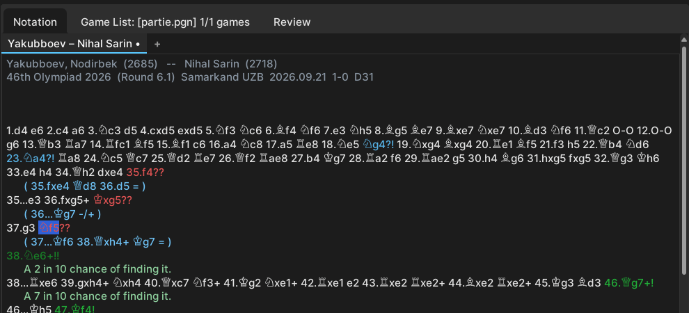
The notation shows the game with its variations and comments. Moves
with a symbol are coloured as on Lichess: !! dark green, ! green,
!? pink, ?! blue, ? orange, ?? red.
- A click on a move goes there.
- A right click on a move: copy the game or the position, move symbol, evaluation, comment (Ctrl+A), promote or delete a variation, review the line, delete the moves before or after, play this position against Toby or an Alter Ego.
- Each game opens in its own tab above the notation. Ctrl+N opens a new game in a new tab, Ctrl+W closes the tab, Tab and Shift+Tab go to the next and previous tab. Tabs can be dragged to reorder them; when they do not all fit, the wheel over them (or the ‹ › arrows) scrolls them. The tabs inside a panel (those of Prepare against a player, for example) can be dragged too.
- Merge into the current game (right click on a game in a list): the moves of the other game are added as variations, the main line unchanged, and the game is quoted after its last move (White vs. Black, year).
- Move times (
[%clk]) can be shown next to the moves: Options › Appearance › Move notation.
Game information
Game › Game information… edits the players, ratings, event, date and result.
Board editor
Edit › Board editor… (or s) sets up any position, as on Lichess: drag pieces from the palettes, choose the side to move and castling rights.
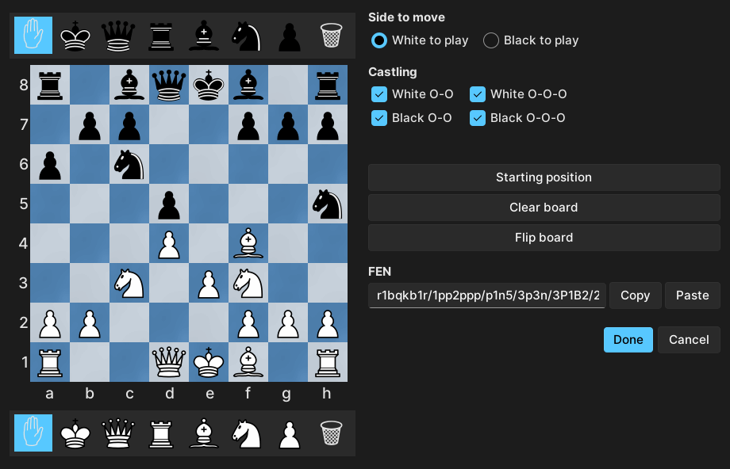
5. Engines
Adding engines
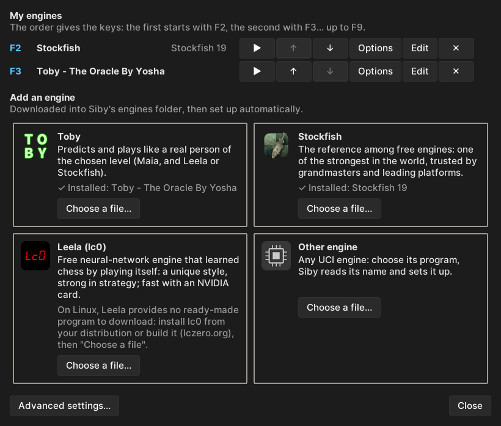
Tools › Engines… lists your engines at the top: their order gives the shortcuts (the first starts with F2, the second with F3, up to F9), and the arrows change it.
Below, Add an engine offers Toby, Stockfish and Leela (Lc0): Download fetches and sets up the engine in one click (Stockfish; Leela on Windows), and Choose a file… adds an engine already on your computer. Other engine adds any UCI engine.
Analysis panels
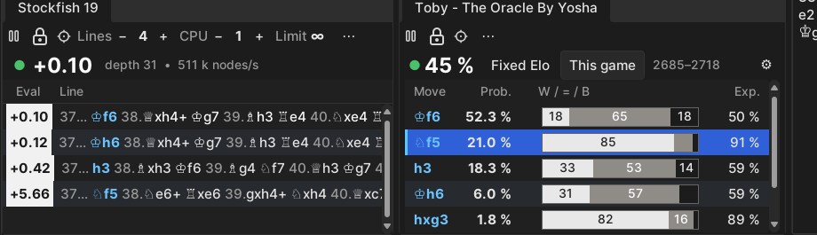
F2 starts the first engine, F3 the second, and so on. Each engine has its own panel:
- the evaluation, depth and speed, then the best lines;
- W/D/L (win, draw, loss) when the engine gives it;
- a click on a line plays its first move; a right click inserts the line or all the lines into the notation;
- the pause button stops the engine; the padlock keeps it on the current position while you browse the game;
- a red dot (⚠) warns of the opponent's threat, as on Lichess.
Space plays the best move of the left panel, Shift+Space the best move of the right panel.
Evaluation bars
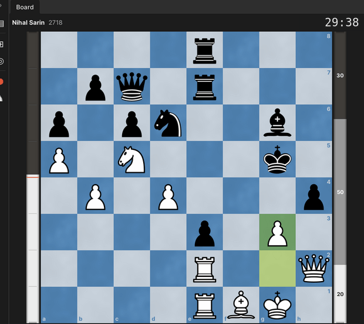
The bars beside the board show each engine's evaluation, converted into winning chances as on Lichess (so that +1 near equality moves the bar more than +1 in a won position). For Toby, the bar shows its own win/draw/loss proportions. A right click on a bar chooses its display and place.
Toby
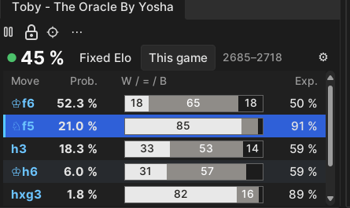
Yakubboev–Nihal Sarin, 46th Olympiad 2026, before 37...Nf5?? (above). Stockfish 19 sees a draw. Toby, set to This game (2685 against 2718), expects 37...Kf6 most often (52.3 %) and gives 37...Nf5 21 %: after it, White wins 85 % of the time.
Toby does not look for the best move: it shows, for each move, the probability that a player of the chosen rating plays it, and the win/draw/loss outcome of that move between players of those ratings. Its expected score (Exp.) is the score a player of that rating can expect after the move.
- Fixed Elo: Toby uses the ratings you choose in its settings (2300 classical by default). This game: it uses the ratings in the game's header.
- The settings (gear icon) choose the rating list (FIDE, Lichess, Chess.com), the time control and the precision.
6. Game review
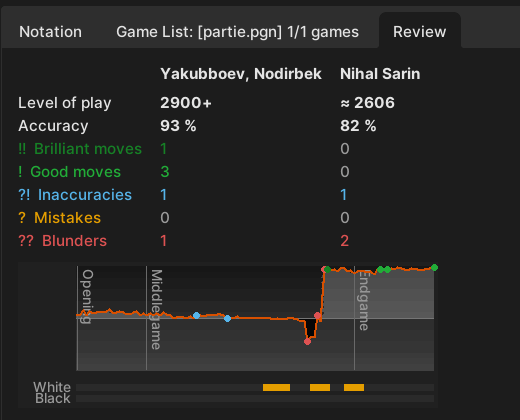
The review of the same game: Nihal Sarin's two blunders, 36...Kxg5?? and 37...Nf5??, turn the curve over in a few moves.
Game › Game review (also at the end of a game against Toby, and in live broadcasts) analyses the whole game:
- Level of play: an estimate of the rating each side played at, from Toby's probabilities. Above 2900 it shows 2900+: Toby learned from human games, and it cannot tell levels apart beyond that.
- Accuracy and the number of brilliant moves (
!!), good moves (!), inaccuracies (?!), mistakes (?) and blunders (??) of each side. A click on a number goes through those moves. - Symbols and variations are written into the game: for each mistake, the line that should have been played, as long as it stays forced.
- The curve shows White's expected score move by move, as on Lichess, with the opening, middlegame and endgame. Hovering over it shows the position; a click goes there.
- With move times, orange and red strips under the curve show time trouble.
How Siby judges a move: in expected score, at the players' rating,
never in raw centipawns. Losing 10 expected-score points is a mistake
(?), 15 a blunder (??). A good move (!) is an only good move that
players of that level rarely find. A sound sacrifice gets !! when
it gives up 5 points of material or more, ! otherwise, and !! too
when players of that level would play it less than 10 % of the time
(a necessary underpromotion counts as a sacrifice). No symbol when the
position stays totally winning anyway.
The review is saved with the game: evaluations in the moves, levels in the header.
7. Opening library
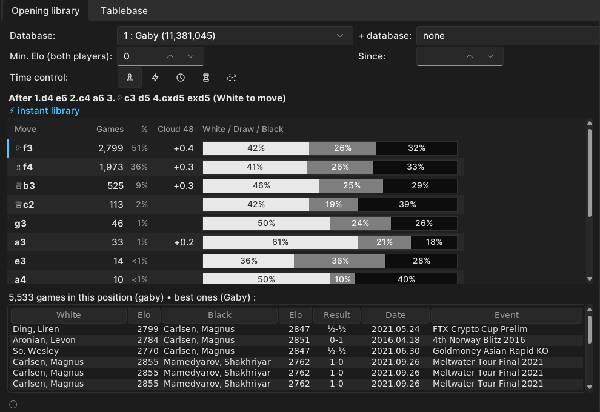
The opening library (Windows › Opening library) shows, for the board position, the moves played in the reference database: number of games, White / draws / Black results, average rating, last time played. It follows the board instantly, even on Gaby.
- A click on a move plays it; hovering over it shows an arrow.
- Two views: Bars (one White / draw / Black bar per move, as on Lichess) or Table. A click on a column header sorts it.
- The Cloud column gives the evaluation of Lichess's cloud for each move.
- The best games in this position are listed under the moves; a click opens one.
8. Preparing against a player
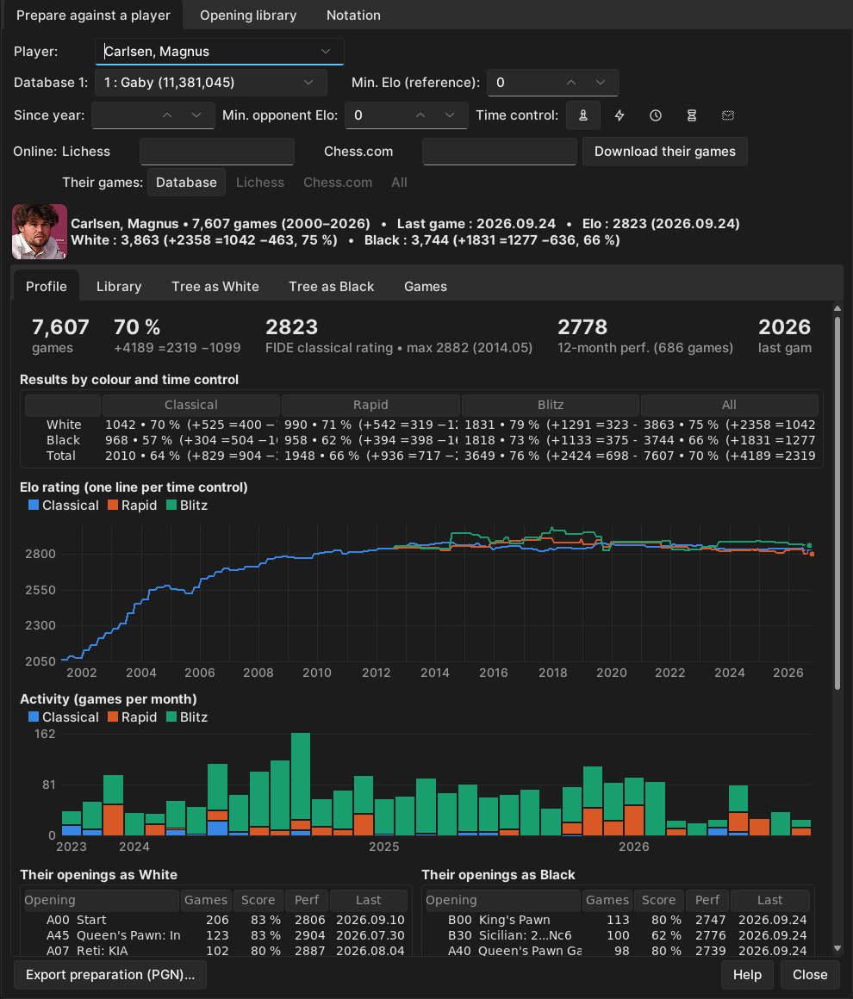
The Lab's Prepare against a player tab (or Tools › Prepare against a player…) gathers everything about an opponent.
- Player: type the first letters of the name and pick it in the list.
- Database 1: where their games are (Gaby by default). What is generally played ("All games") always comes from the reference database (Gaby by default, or the one chosen in My databases).
- Filters: since year, minimum opponent rating, time control (classical, rapid, blitz, correspondence, all).
- Online: their Lichess and Chess.com accounts. Download their games fetches them, and Their games chooses between the database, Lichess, Chess.com or all.
The tabs:
- Profile: photo, FIDE rating and history, peak, rating curve, performance, openings.
- Library: their moves in the board position. Their results, how much they overperform their rating with each move, and when they last played it. Moves not played for five years are greyed. On the right, the reference database's statistics for the same moves; the moves the player has that the reference never has are in orange.
- Tree as White / Tree as Black: their whole repertoire.
- Games: their games in the position; a click opens one.
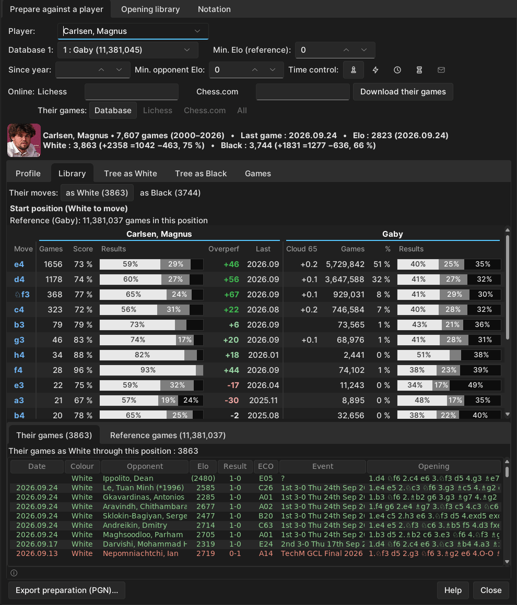
9. Searching
Search › Games… finds games by player, event, years, ratings or result. Search › Partial position and material… finds positions with given pieces on given squares, or a given material balance (for example bishops of opposite colours). Search › Moves… finds games where given moves were played, in any order.
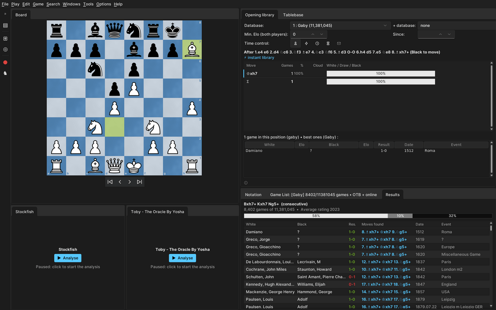
Results open in the Search results panel: each game with the move found; hovering over it shows the position; a click opens the game.
The search keeps a filter on the database: the game list then shows only the games found. Search › Show all games (Ctrl+R) removes it.
10. Playing against Toby or an Alter Ego
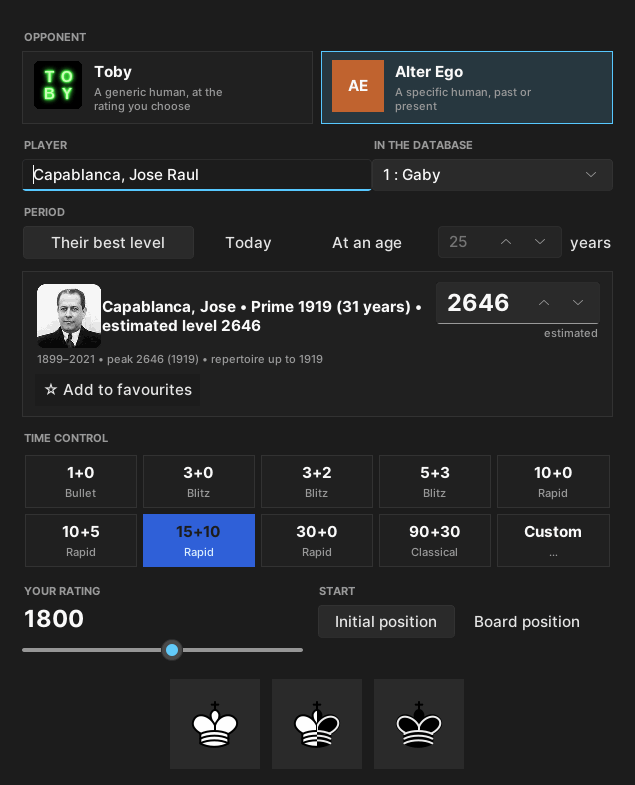
The ♞ icon (or Play › Play against Toby…) opens the Play window.
Opponents
- Toby: a generic human at the rating you choose (up to 2900).
- Alter Ego: a specific player from your database, in their prime, today, or at a given age. Their own opening moves come from their games; once out of their repertoire, Toby plays at their estimated classical level.
Settings
- Time control: one click on a preset, or Custom.
- Levels: Toby's level and your rating, with the rating list.
- Start:
- Initial position or Board position;
- Set up a position… opens the board editor.
- No evaluation is shown during the game (as on Lichess).
- One click on a king (White, random, Black) starts the game.
During the game
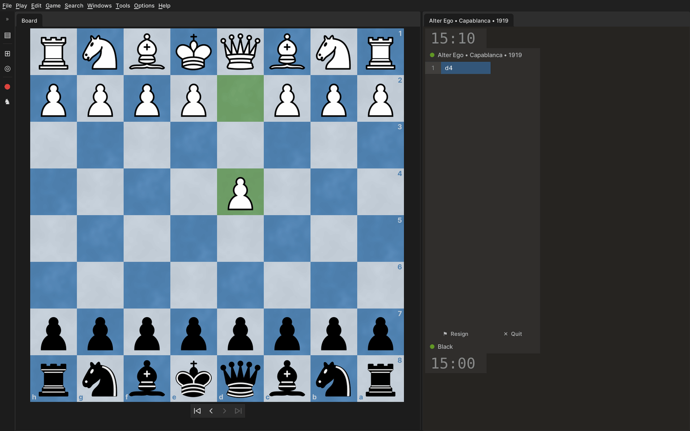
Clocks, premoves, promotion and resign work as on Lichess. At the end: Rematch, New opponent, Analysis board or Game review. Every game is saved in My Siby games.
11. Live broadcasts
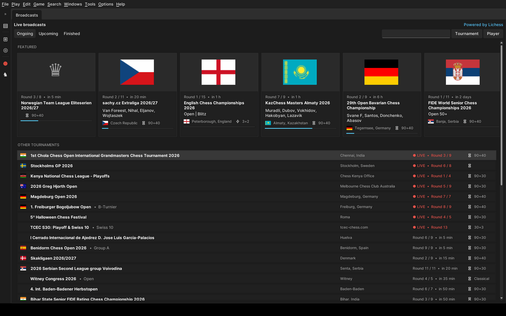
The ● view follows the broadcasts of Lichess: tournaments live now, upcoming and finished, with a search by tournament or player.
- A click on a tournament shows its rounds and games; a click on a game follows it live, with the clocks. If the game on the board was changed and not saved, the broadcast game opens in a new tab: nothing is lost, nothing is asked.
- Back to live returns to the current move after browsing.
- Save keeps the game (or the whole round) in Siby live or another database.
- Review runs the game review on the game so far.
12. Training
- Review the line (right click in the notation, or Play › Training): you play one side of the line in the notation; Siby plays the other side and tells you when you leave the line.
- Repertoire (Play › Training › Repertoire): spaced repetition of your repertoire, as with flashcards.
13. Endgame tablebases
Windows › Tablebases shows, from 7 pieces down, the result of the position and of each move, from Lichess's online tablebase or from your own Syzygy files (Options › Folders and files › Endgame tablebases…).
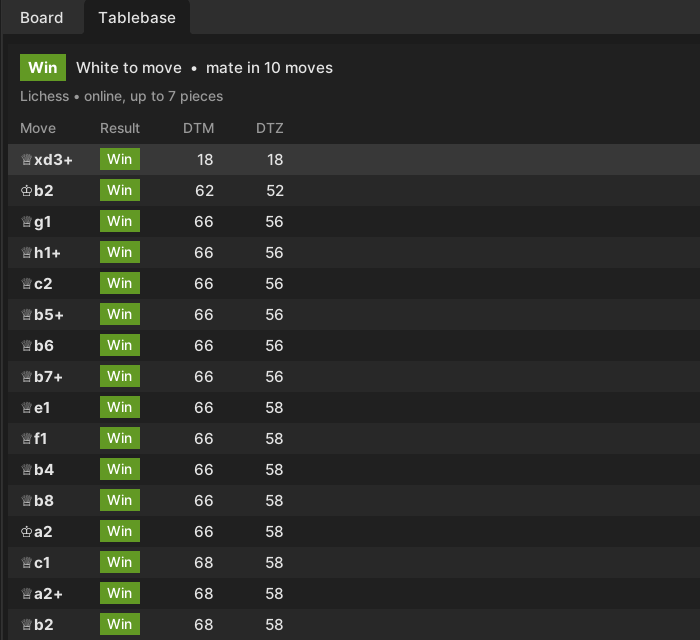
14. Options
- My profile: your name, accounts and repertoire files.
- Appearance: dark or light theme, board colours, pieces, coordinates, move notation (figurines or letters), last-move tint, move dots, engine arrows.
- Sounds: turn the sounds on or off.
- Evaluation bars: which engines, display, place.
- Language: English or French.
- Full screen: F11 from the menu.
15. Keyboard shortcuts
| Keys | Action |
|---|---|
| ← → | Previous / next move (anywhere, except while typing in a field) |
| ↑ ↓ (or Home, End) | Start / end of the game |
| h l k j | Previous move, next move, start, end (as on Lichess) |
| f | Flip the board |
| s | Board editor |
| d | Comment on the move |
| Space / Shift+Space | Play the best move of the left / right engine panel |
| F2 … F9 | Start engine 1 … 8 |
| Ctrl+N | New game in a new tab |
| Ctrl+W | Close the tab |
| Tab / Shift+Tab | Next / previous tab |
| Ctrl+S | Save the game |
| Ctrl+Shift+S | Save in another database |
| Ctrl+Z / Ctrl+Y | Undo / redo |
| Ctrl+C / Ctrl+Shift+C | Copy the game (PGN) / the position (FEN) |
| Ctrl+V | Paste a game or a position |
| Ctrl+A | Comment on the move |
| Ctrl+Alt+0 | Null move (-- in PGN), as in ChessBase |
| Ctrl+L | Game list |
| Ctrl+K | Choose a panel |
| Ctrl+O | Open a database |
| Ctrl+R | Show all games (remove the filter) |
| F11 / Shift+F11 | Next / previous game of the list |
| Alt+1 … 9 | Switch database |
| Ctrl+Q | Quit |
16. Where Siby keeps your files
Everything personal is in Documents\Siby on Windows, and in
~/Documents/Siby on Linux (settings in ~/.scidvspc):
- Gaby (the reference database and its library files);
- Siby games (your games against Toby and the Alter Egos);
- Siby live (saved live games);
- your settings, engines, photos and pieces.
A new version of Siby finds them there: nothing is replaced or duplicated when you install it again.
Siby is free software (GNU GPL v2). See Help › Thanks for the projects it builds on.